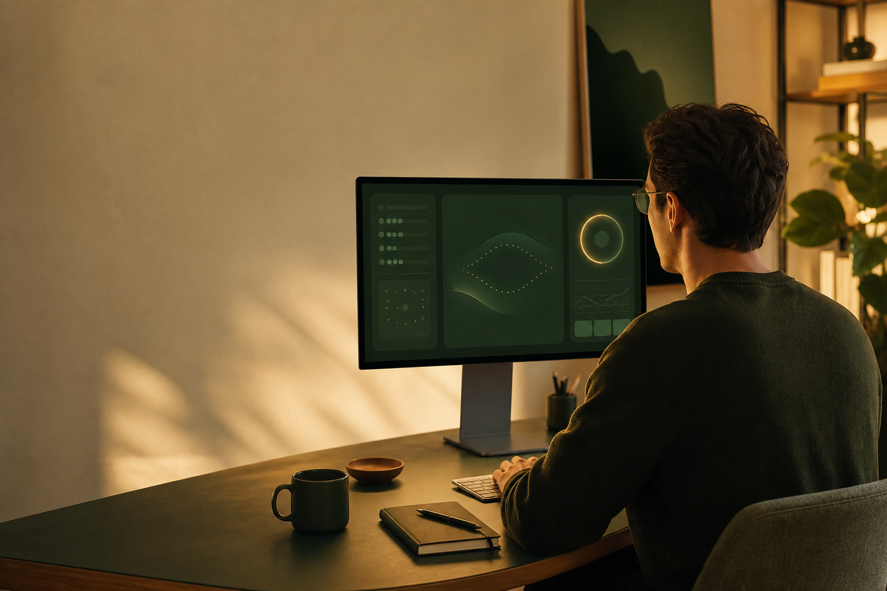

Your recent blink pace, at a glance.
The menu bar shows the rolling blink count from the last 60 seconds, with a calm visual confirmation after a recognized blink.
For focused Mac days
Blink Eyes is a calm, private reminder that helps you notice your blinking rhythm and take screen breaks before your day slips into autopilot.
Built for macOS · Camera analysis stays on your Mac

A more considered nudge
Blink Eyes lives where your attention already is: the menu bar. It keeps the feedback gentle, readable, and easy to shape around your own working rhythm.
The menu bar shows the rolling blink count from the last 60 seconds, with a calm visual confirmation after a recognized blink.
Choose a personal interval. The centered reminder can be adjusted by timing, sensitivity, and optional fade strength.
Enable a separate active-time break reminder when it suits your routine. It is off by default.
Designed around you
Every workspace, camera angle, lighting condition, and attention span is different. Blink Eyes keeps the controls clear so the reminders feel useful rather than intrusive.
Privacy is the feature
Blink Eyes processes the selected camera only in memory on your Mac. No account to create. No cloud destination. No advertising profile waiting at the other end.
The app requests camera permission only for local blink awareness and the optional recognition preview.
Frames and eye landmarks are processed in memory on the Mac while monitoring is active.
Only local settings and technical preferences remain in the app container. Camera frames are not recorded or uploaded.
A quieter screen routine starts small
Blink Eyes is built for people who spend long, focused days on a Mac and want a discreet cue to pause, blink, and look away.
Blink Eyes is a productivity reminder and is not intended for medical use. Blink-rate results are estimates, not health measurements.